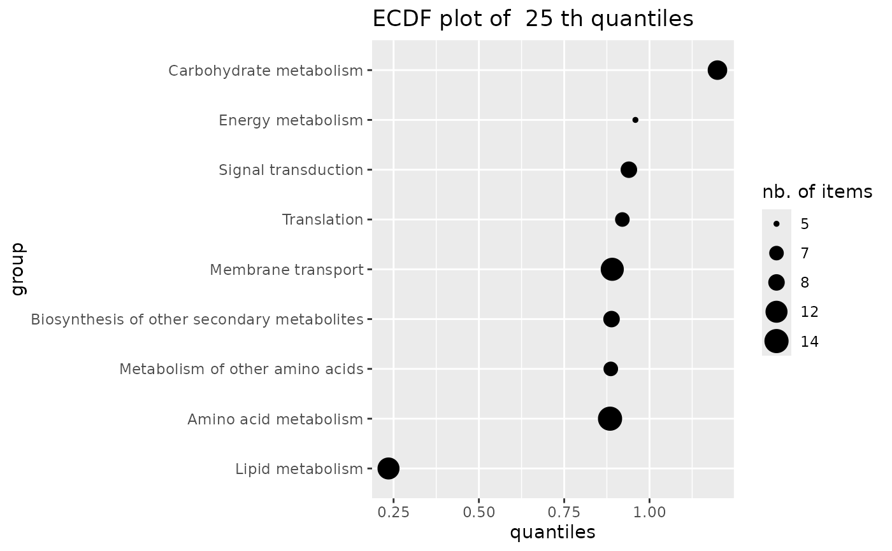
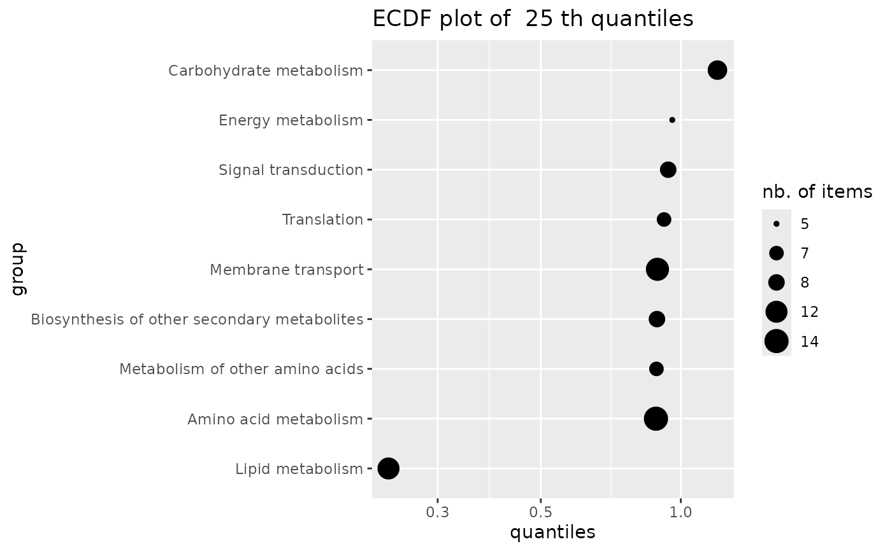

ECDF plot of a given quantile of a variable calculated by group
ecdfquantileplot.RdPlots a given quantile of a variable calculated by group as an ECDF plot with points sized by the numbers of items per group. In the context of this package this function is intended to be used with the BMD as the variable and with groups defined by the user from functional annotation.
Arguments
- variable
A numeric vector corresponding to the variable on which we want to calculate the given quantile by group. In the context of the package this variable may be a BMD.
- by
A factor of the same length defining the groups. In the context of this package this factor may code for groups defined by the user from functional annotation.
- quantile.prob
The probability (in ]0, 1[) defining the quantile to calculate on each group.
- title
An optional title for the plot.
Details
The given quantile is calculated for each group (e.g.from all items of a metabolic pathway)
using function quantile and plotted as an ECDF plot. In this ECDF plot of quantiles each point is sized according to the number of items in the corresponding group (e.g. metabolic pathway).
We recommend the use of the new function
sensitivityplot that may be more convenient and that offers more options.
See also
See quantile and sensitivityplot.
Examples
# (1) An example from data published by Larras et al. 2020
# in Journal of Hazardous Materials
# https://doi.org/10.1016/j.jhazmat.2020.122727
# a dataframe with metabolomic results (output $res of bmdcalc() or bmdboot() functions)
resfilename <- system.file("extdata", "triclosanSVmetabres.txt", package="DRomics")
res <- read.table(resfilename, header = TRUE, stringsAsFactors = TRUE)
str(res)
#> 'data.frame': 31 obs. of 27 variables:
#> $ id : Factor w/ 31 levels "NAP47_51","NAP_2",..: 2 3 4 5 6 7 8 9 10 11 ...
#> $ irow : int 2 21 28 34 38 47 49 51 53 67 ...
#> $ adjpvalue : num 6.23e-05 1.11e-05 1.03e-05 1.89e-03 4.16e-03 ...
#> $ model : Factor w/ 4 levels "Gauss-probit",..: 2 3 3 2 2 4 2 2 3 3 ...
#> $ nbpar : int 3 2 2 3 3 5 3 3 2 2 ...
#> $ b : num 0.4598 -0.0595 -0.0451 0.6011 0.6721 ...
#> $ c : num NA NA NA NA NA ...
#> $ d : num 5.94 5.39 7.86 6.86 6.21 ...
#> $ e : num -1.648 NA NA -0.321 -0.323 ...
#> $ f : num NA NA NA NA NA ...
#> $ SDres : num 0.126 0.0793 0.052 0.2338 0.2897 ...
#> $ typology : Factor w/ 10 levels "E.dec.concave",..: 2 7 7 2 2 9 2 2 7 7 ...
#> $ trend : Factor w/ 4 levels "U","bell","dec",..: 3 3 3 3 3 1 3 3 3 3 ...
#> $ y0 : num 5.94 5.39 7.86 6.86 6.21 ...
#> $ yrange : num 0.456 0.461 0.35 0.601 0.672 ...
#> $ maxychange : num 0.456 0.461 0.35 0.601 0.672 ...
#> $ xextrem : num NA NA NA NA NA ...
#> $ yextrem : num NA NA NA NA NA ...
#> $ BMD.zSD : num 0.528 1.333 1.154 0.158 0.182 ...
#> $ BMR.zSD : num 5.82 5.31 7.81 6.62 5.92 ...
#> $ BMD.xfold : num NA NA NA NA 0.832 ...
#> $ BMR.xfold : num 5.35 4.85 7.07 6.17 5.59 ...
#> $ BMD.zSD.lower : num 0.2001 0.8534 0.7519 0.0554 0.081 ...
#> $ BMD.zSD.upper : num 1.11 1.746 1.465 0.68 0.794 ...
#> $ BMD.xfold.lower : num Inf 7.611 Inf 0.561 0.329 ...
#> $ BMD.xfold.upper : num Inf Inf Inf Inf Inf ...
#> $ nboot.successful: int 957 1000 1000 648 620 872 909 565 1000 1000 ...
# a dataframe with annotation of each item identified in the previous file
# each item may have more than one annotation (-> more than one line)
annotfilename <- system.file("extdata", "triclosanSVmetabannot.txt", package="DRomics")
annot <- read.table(annotfilename, header = TRUE, stringsAsFactors = TRUE)
str(annot)
#> 'data.frame': 84 obs. of 2 variables:
#> $ metab.code: Factor w/ 31 levels "NAP47_51","NAP_2",..: 2 3 4 4 4 4 5 6 7 8 ...
#> $ path_class: Factor w/ 9 levels "Amino acid metabolism",..: 5 3 3 2 6 8 5 5 5 5 ...
# Merging of both previous dataframes
# in order to obtain an extenderes dataframe
# bootstrap results and annotation
annotres <- merge(x = res, y = annot, by.x = "id", by.y = "metab.code")
head(annotres)
#> id irow adjpvalue model nbpar b c d
#> 1 NAP47_51 46 7.158246e-04 linear 2 -0.05600559 NA 7.343571
#> 2 NAP_2 2 6.232579e-05 exponential 3 0.45981242 NA 5.941896
#> 3 NAP_23 21 1.106958e-05 linear 2 -0.05946618 NA 5.387252
#> 4 NAP_30 28 1.028343e-05 linear 2 -0.04507832 NA 7.859109
#> 5 NAP_30 28 1.028343e-05 linear 2 -0.04507832 NA 7.859109
#> 6 NAP_30 28 1.028343e-05 linear 2 -0.04507832 NA 7.859109
#> e f SDres typology trend y0 yrange maxychange
#> 1 NA NA 0.12454183 L.dec dec 7.343571 0.4346034 0.4346034
#> 2 -1.647958 NA 0.12604568 E.dec.convex dec 5.941896 0.4556672 0.4556672
#> 3 NA NA 0.07929266 L.dec dec 5.387252 0.4614576 0.4614576
#> 4 NA NA 0.05203245 L.dec dec 7.859109 0.3498078 0.3498078
#> 5 NA NA 0.05203245 L.dec dec 7.859109 0.3498078 0.3498078
#> 6 NA NA 0.05203245 L.dec dec 7.859109 0.3498078 0.3498078
#> xextrem yextrem BMD.zSD BMR.zSD BMD.xfold BMR.xfold BMD.zSD.lower
#> 1 NA NA 2.2237393 7.219029 NA 6.609214 0.9785095
#> 2 NA NA 0.5279668 5.815850 NA 5.347706 0.2000881
#> 3 NA NA 1.3334076 5.307960 NA 4.848527 0.8533711
#> 4 NA NA 1.1542677 7.807077 NA 7.073198 0.7518588
#> 5 NA NA 1.1542677 7.807077 NA 7.073198 0.7518588
#> 6 NA NA 1.1542677 7.807077 NA 7.073198 0.7518588
#> BMD.zSD.upper BMD.xfold.lower BMD.xfold.upper nboot.successful
#> 1 4.068699 Inf Inf 1000
#> 2 1.109559 Inf Inf 957
#> 3 1.746010 7.610936 Inf 1000
#> 4 1.464998 Inf Inf 1000
#> 5 1.464998 Inf Inf 1000
#> 6 1.464998 Inf Inf 1000
#> path_class
#> 1 Lipid metabolism
#> 2 Lipid metabolism
#> 3 Carbohydrate metabolism
#> 4 Carbohydrate metabolism
#> 5 Biosynthesis of other secondary metabolites
#> 6 Membrane transport
### an ECDFplot of quantiles of BMD-zSD calculated by pathway
ecdfquantileplot(variable = annotres$BMD.zSD,
by = annotres$path_class,
quantile.prob = 0.25)

# same plot in log10 dose scale (not interesting on this example
# but could be on another one)
if (require(ggplot2))
ecdfquantileplot(variable = annotres$BMD.zSD,
by = annotres$path_class,
quantile.prob = 0.25) + scale_y_log10()
